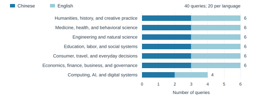

Responsiveness
Fulfillment of the query and its constraints.
from Individual Quality to Comparative Merit
CompareDR combines task-specific pointwise audits with guideline-based pairwise comparisons: does a report meet the query's requirements, and which contributions make it more useful than another?
Code, reports, annotations, and reproduction resources are available in the public repository.
01 / EVALUATION FRAMEWORK
Frozen queries and criteria. Passage-linked comparisons. Evidence-informed judgments.
For the same query about Japan's elderly consumer market, one report may emphasize long-term estimates and sensitivity analysis, while another emphasizes consumer segments and business opportunities. Coverage alone does not explain their relative value. CompareDR audits individual requirements and compares substantive contributions, linking judgments to report passages and supporting evidence.

Fulfillment of the query and its constraints.
Source quality and support for the report's claims.
Analytical depth, assumptions, and inferential validity.
Integration of findings and their value for the task.
Global organization, clarity, and reading efficiency.
Pointwise ratings of 1–5 map to 0, 25, 50, 75, and 100. Pairwise judgments retain ties and preference strength; an ordinal paired-comparison model estimates each report's expected score against its peers. PT and PW category means receive equal weight where both are available. Organization and expression are averaged into Readability; Reasoning and Synthesis are averaged into Insight. The total uses weights of 30% Responsiveness, 30% Evidence, 20% Insight, and 20% Readability. Queries receive equal weight.
The reference score range is 0–100, not a factual-accuracy percentage. Pairwise scores depend on the comparison pool. Verification checks consequential claims when requested; it neither contributes a separate score nor constitutes an exhaustive factual audit.
For a task on Prometheus time-series churn, a pointwise criterion asks whether the report distinguishes frequent creation and retirement of series from continued sample generation within a series. A pairwise guideline asks which report more clearly and convincingly explains how churn leads to resource pressure and operational consequences. These English descriptions render one frozen task's criteria for illustration. The data download preserves selected fields from one pointwise and one pairwise example per task in their original languages, not the full criterion set.
02 / LEADERBOARD
| Rank | Model / Harness | ||||||
|---|---|---|---|---|---|---|---|
| 1 | GPT-6ChatGPT Deep Research | 93.07 | 86.09 | 74.83 | 73.74 | 72.35 | 83.08 |
| 2 | LongCatLongCat-DeepResearch | 93.59 | 83.60 | 82.64 | 78.79 | 66.61 | 82.62 |
| 3 | Kimi K3Kimi Researcher | 90.88 | 76.55 | 70.19 | 67.04 | 74.52 | 78.86 |
| 4 | Claude Opus 5Claude Research | 86.74 | 69.58 | 52.03 | 57.61 | 45.33 | 66.93 |
| 5 | MiniMax M3MiniMax Agent | 84.41 | 60.85 | 47.33 | 46.19 | 57.63 | 64.46 |
| 6 | GPT-5.5GPT Researcher | 78.86 | 59.11 | 36.35 | 46.75 | 46.30 | 58.96 |
| 7 | —DuMate Deep Research | 82.92 | 50.24 | 35.08 | 37.93 | 44.05 | 56.06 |
| 8 | Gemini 3.7 FlashGemini Deep Research | 81.25 | 46.11 | 35.51 | 27.73 | 33.42 | 51.22 |
| 9 | Qwen 3.8 MaxQwen Deep Research | 70.18 | 39.60 | 16.05 | 14.22 | 12.44 | 38.45 |
On small screens, swipe the table horizontally to see every dimension and the total. 40 reports per system; 1,440 report pairs in total. Bold indicates the best score in each column. Rank always denotes overall rank, including after sorting by a dimension. Scores are rounded to two decimals for display; sorting and downloads retain full precision. The underlying DuMate model was not disclosed.
Leaderboard judge: GPT-5.5 with medium reasoning. External verification uses deepseek-v4.1-flash with reasoning disabled. Model and harness names identify the report-generation systems in this collection, not the judge or current product menus. Kimi K3 follows the main-table label; its collection setting is Kimi K3 Max.
ChatGPT Deep Research leads overall and in Evidence. LongCat leads in Responsiveness.
LongCat leads in both Reasoning and Synthesis.
Kimi leads in Readability. Analytical contribution and presentation quality do not always move together.
These are descriptive results for this frozen cohort. Small score gaps alone do not establish statistically significant differences.
03 / EXPERIMENTS
Human preferences, controlled quality changes, component comparisons, and judge reliability are evaluated separately.
The leaderboard covers nine systems. Human-preference and component comparisons use 80 annotated pairs from a fixed seven-system collection; each validation study retains its own report identities.
Across 40 queries, 120 revisions receive human confirmation of their quality directions and target dimensions: 40 improvements, 40 degradations, and 40 equivalents. All four methods are compared on the same 119 revisions; one equivalent revision lacks a completed source-protocol score.
| Method | τ | Improvement | Degradation | Equivalent | ACC | Macro-F1 |
|---|
Direction columns give correct counts and percentages. ACC and macro-F1 are percentages. The absolute tie threshold τ is optimized separately for each method's macro-F1 on this same set: these are within-set calibration results, not held-out performance.
Full framework and Same-coverage PT use deepseek-v4.1-flash with max reasoning. RACE uses GPT-5.5 medium; source-protocol configurations follow query provenance. Full framework jointly fits 280 reports and 840 within-query pairs. A revision is compared with its same-method base score.
There are 123 target-dimension judgments from 120 revisions. Each method uses one macro-F1-optimal absolute threshold across all dimensions: 4.68 for Full framework and 3.13 for Same-coverage PT.
| Dimension | N | Full framework | Same-coverage PT |
|---|
Accuracy and macro-F1 are optimized separately. Each cell shows the best metric value (%) followed by a threshold attaining it; percentage thresholds are relative to the base report's score.
| Method | Absolute: ACC (τ) | Absolute: F1 (τ) | Percentage: ACC (τ) | Percentage: F1 (τ) |
|---|
The hybrid evaluator achieves 86.25% agreement with blinded human preferences, with Cohen's κ = 0.746. Human annotations give A / tie / B labels for overall quality and each of the five dimensions. Hybrid, Direct, and OpenRS use GPT-5.5 medium.
Bars show agreement on a 0–100% scale. Human preference is distinct from externally verified factual correctness.
| Method | Agreement | Cohen's κ | Macro-F1 | 95% CI |
|---|
Two pairs per query yield 80 pairs involving 128 distinct reports. Rubric review and report-preference annotation are separate tasks. Confidence intervals use 10,000 source-stratified query-cluster bootstrap samples, retaining the two pairs from a query together. The sample includes small, medium, and large machine-score gaps; it is not a uniform sample of all possible report pairs. The agreement difference between Hybrid and Direct has a 95% interval of −3.75 to 8.75 percentage points, which includes zero.
Hybrid does not recover any of the seven human-labeled ties; four further disagreements select the opposite winner. OpenRS has the highest macro-F1 despite lower overall agreement.
All component comparisons use GPT-5.5 medium and the same 80 human-annotated pairs. PT-only and PW-only use their actual dimension coverage. Removing verification scoring feedback is not the same as eliminating retrieval throughout the pipeline.
| Configuration | Agreement | Cohen's κ | Macro-F1 | Δ (pp) |
|---|
Δ is the agreement difference from the matched full framework, in percentage points. The summary condition replaces graphs with passage-linked summaries, reruns localization and difference extraction, and omits verification feedback from final content comparisons. This is not an isolated graph-edge ablation.
On 20 queries and four systems, judges construct their report representations and comparison judgments from the same queries, reports, criteria, and verification findings. Scores and rank correlations are measured relative to GPT-5.5.
| Judge | Order agreement | Strict reversals | System ρ | ICC(A,1) |
|---|
DeepSeek-v4.1f denotes deepseek-v4.1-flash with max reasoning; GPT-5.5 uses medium reasoning and Gemini 2.5 Pro uses provider defaults. Ranking correlations involve four systems, not all nine leaderboard systems. Consistency is not a measure of human accuracy.
| Judge | System τb | Mean query ρ | Score bias | Cycle rate |
|---|
Score bias is the alternative judge's mean report score minus GPT-5.5's. Cycle rates use non-tied three-system comparisons within the twenty-query subset, after bidirectional averaging.
Report graphs, extracted differences, and verification findings are held fixed. Missing ratings are excluded, not imputed. PW-repeat comparisons use 180, 163, and 178 matched items; PT-repeat comparisons use 120 for each judge. Order statistics pool valid matches from both rounds.
| Metric | GPT-5.5 | DeepSeek-v4.1f | Gemini 2.5 Pro |
|---|
A retrospective replay holds out each of seven systems in turn, retains all 40 queries, and samples opponents from the six existing systems. Inverse-probability weighting preserves the comparison design. Each budget is repeated 100 times per held-out system, giving 700 trials without additional model calls.
| Opponents / query | New pairs | Token savings | MAE | P95 | Rank accuracy |
|---|
Two opponents per query reduce estimated incremental evaluation token use by 64.23%, with new-system total-score MAE of 0.318 points. Savings are relative to full entry and exclude report generation; this is a replay of existing judgments, not a prospective experiment.
| Model | Responses | Input (M) | Output (M) | Total (M) |
|---|
Recorded requests associated with the nine-system evaluation assets include retry responses. Usage is unavailable for 1,422 additional requests. Report generation, search-service charges, development, and separate validation experiments are excluded. This is neither a fresh-run estimate nor a complete provider bill.
04 / BENCHMARK STATISTICS
DRB-I: 6 · DRB-II: 22 · ResearchRubrics: 12

Tasks come from existing public research benchmarks. Human reviewers select, revise, and supplement candidate criteria for relevance, clarity, usable anchors, non-redundancy, and flexibility across valid research approaches.
The frozen release contains 20–39 criteria per task (27.5 on average): 700 adapted from source benchmarks, 160 combining multiple sources, 47 derived from query requirements, and 192 newly developed.
The collection balances Chinese and English overall, not within each source. DRB-I and DRB-II contribute all 20 Chinese tasks; ResearchRubrics contributes 12 of the 20 English tasks. Every query has nine collected reports and two human-annotated report pairs.
| Benchmark component | DRB-I | DRB-II | ResearchRubrics | Total |
|---|
Pointwise criteria account for 70.6% of the 1,099 frozen criteria and pairwise guidelines for 29.4%: 19.4 and 8.1 per task on average. Responsiveness accounts for 60.9% of all criteria. Reasoning, synthesis, and readability together account for 285 of 323 pairwise guidelines (88.2%). These are inventory counts, not scoring weights or numbers of evaluation calls.
| Dimension | Assessment focus | Pointwise | Pairwise | Total |
|---|
05 / DATA VIEWER
Original queries and selected criterion fields are shown in their source languages, with no machine-translated evaluation inputs. Each task shows one pointwise and one pairwise example, not all 1,099 criteria. Full criteria and report collections are linked in the resource guide.
06 / CODE, DATA & PARTICIPATION
Run the evaluator, reproduce the results, inspect reports and labels, or prepare a new-system submission. Nine-system leaderboard inputs and seven-system validation inputs retain separate identities.
Repository resources retain separate code, original-data, and third-party license scopes. Complete resource map ↗
Start with the portable CLI, then inspect the pipeline for graph construction, PT/PW judging, verification, and aggregation.
Recalculate all 16 numerical tables from frozen judgments, labels, and trials. Offline reproduction makes no model calls.
360 complete reports: 40 queries × 9 systems. Use this collection for the main leaderboard; the manifest binds each file to its identity and hashes.
280 reports: 40 queries × 7 systems. These are the independently frozen inputs for human-preference, component, and sampling studies.
Find all 1,099 criteria, 80 human-preference pairs, and the directions and target dimensions for 120 controlled revisions. Report identities are cohort-specific.
Generate reports for the 40 frozen queries, package the outputs with model and harness settings, and run the format checker before maintainer review.
Includes all 40 queries, 80 selected criterion examples, full-precision leaderboard scores, and displayed experimental results—not the complete report collection. Numerical results remain aligned with the 16 November 2026 manuscript snapshot.
07 / CITE COMPAREDR
Manuscript citation. A public paper URL and arXiv identifier will be added once available.
@unpublished{wu2026comparedr,
title = {CompareDR: Benchmarking Deep Research Reports from Individual Quality to Comparative Merit},
author = {Wanli Wu and He Zhu and Yue Xu and Haolin Ren and Yan Chen and XunLiang Cai and Fan Yang and LingChuan Liu and Shizhu He},
year = {2026},
note = {Manuscript}
}
Task sources: DeepResearch Bench · DeepResearch Bench II · ResearchRubrics.
Code, benchmark data, and reports retain distinct license scopes and third-party attribution. See release and licensing status and data provenance. For questions, contact the maintainers through repository issues.